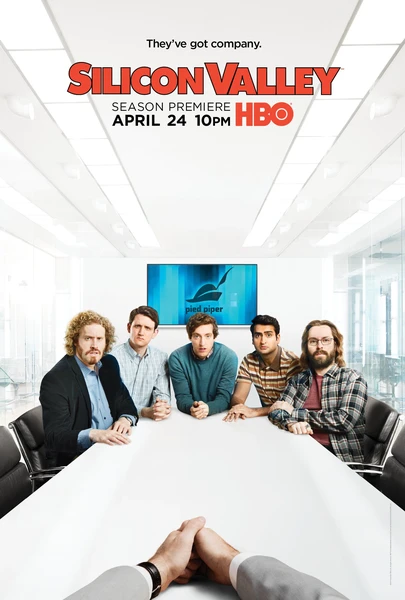

Сериал · 2014 · Комедия
Ситком о стартапе «Pied Piper» и его алгоритме сжатия данных, который обещает превзойти всё существующее, — но талант оказывается самой хрупкой валютой в долине. Каждый сезон — один и тот же круг ада: инвесторы с пустыми обещаниями, гиганты, копирующие идею, и амбиции, которые ставятся выше выживания. Едва ли существует более точная и смешная сатира на Кремниевую долину.
A sitcom about the startup 'Pied Piper' and its data-compression algorithm that promises to beat everything — except talent turns out to be the most fragile currency in the valley. Every season is the same loop through an inferno: investors with empty promises, giants copying the idea, ambitions placed above survival. There is hardly a more accurate and funnier satire of Silicon Valley.
← Вернуться в каталог IT Movies